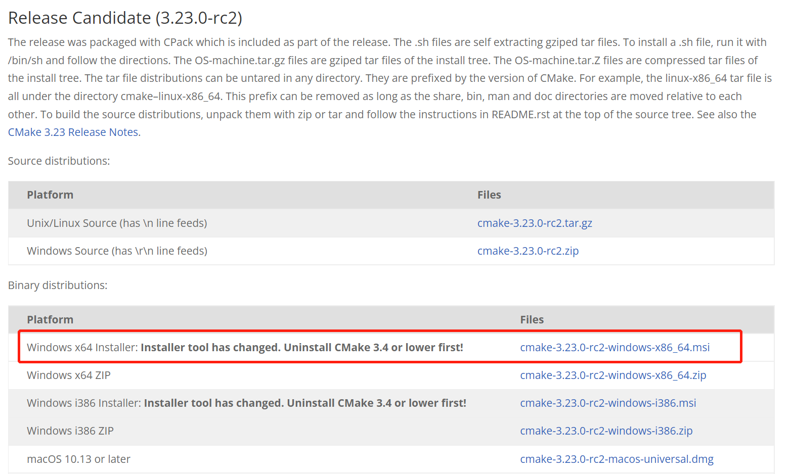
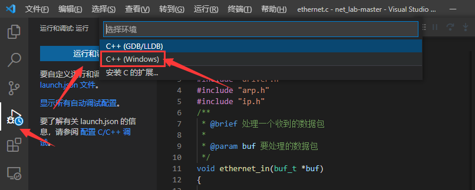
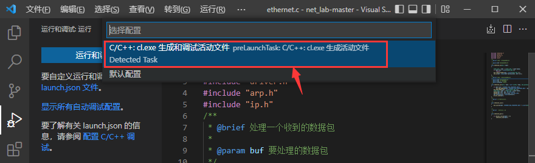
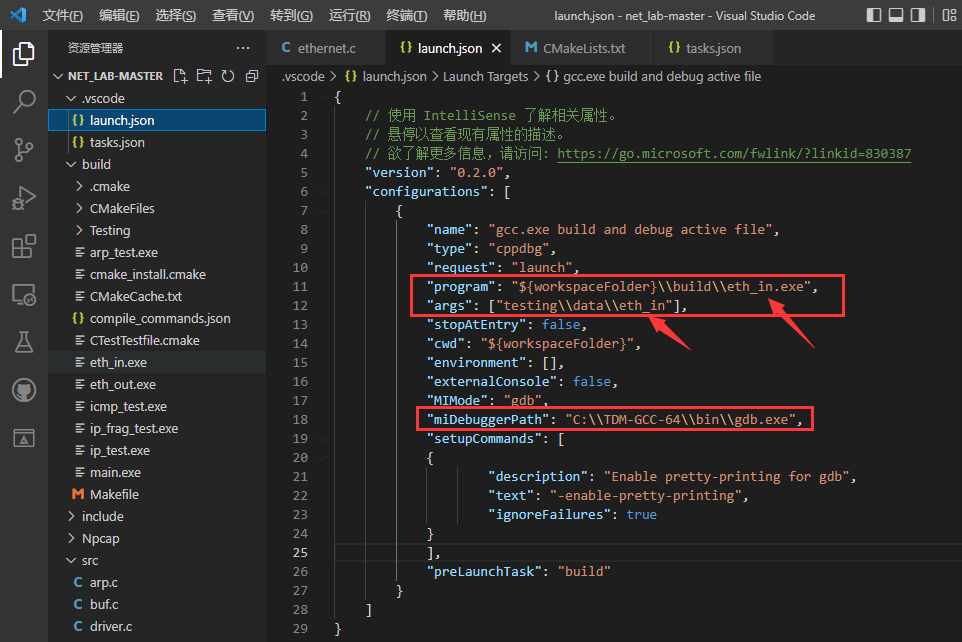

1. Windows开发环境搭建
重要
为了给同学们演示如何下载、编译、调试net-lab，我们录制了演示视频，请到bilibili上观看。
【网络协议栈编译调试】 https://www.bilibili.com/video/BV1kT411q7aB/?share_source=copy_web
1.1. 实验工具
1.1.1. VSCode
Visual Studio Code 是一款功能强大的代码编辑器, 适用于几乎任何语言并可在任何操作系统上运行。通过 VSCode 的强大扩展库，我们可以在 VSCode 上一站式创建，编辑，构建，运行和调试远程主机上的工程文件，就像使用 Code::Blocks 操作本地工程一样。
在https://code.visualstudio.com/ 下载并在物理机上安装 VSCode 软件。
1.1.2. npcap
npcap是一个网络数据包抓包工具，它是WinPcap的改进版，支持WIndows平台的回环数据包采集和发送。
npcap下载地址： https://npcap.com/#download
备注
npcap版本必须大于1.0
在安装过程选择“Install Npcap in WinPcap API-compatible Mode”

1.1.3. cmake
CMake是一个跨平台的编译工具。它可以跨平台生成对应平台能使用的Makefile，这样我们就不用再自己去修改Makefile了，非常地方便。那它又是根据什么生成的makefile呢？就是一个叫CMakeLists.txt文件去生成Makefile，当然，这个CMakefile.txt是要我们自己编写的。本实验已经提供好了CMakefile.txt文件，可大家学习参考：）
CMake自带有ctest工具可以用于代码测试。再使用CMakefile.txt文件编译工程的时候，CTest会自动configure、build、test和展示测试结果。
CMake的下载地址： https://cmake.org/download/
Windows 64位系统建议选择下面标红框框的版本：
下载完成后，双击进行安装。在安装过程建议选择“Add CMake to the system PATH for all users”

1.1.4. gcc
推荐大家安装tdm-gcc，tdm-gcc是一个Windows编译器套件，包括gcc、g++等，工具比较齐全。
tdm64-gcc下载地址： https://github.com/jmeubank/tdm-gcc/releases/download/v10.3.0-tdm64-2/tdm64-gcc-10.3.0-2.exe
1.2. Windows下编译和调试
首先下载net-lab实验包： 获取协议栈编程实验框架代码
打开VSCode软件，在左侧边栏的扩展商店搜索并安装以下扩展：
Chinese (Simplified) Language Pack for Visual Studio Code
C/C++
CMake Tools
安装完成后重启VSCode。
点击打开文件夹打开工程目录后即可进行代码操作。
注意
确保CMakeLists.txt处于当前根目录中，也就是用VSCode软件直接打开net-lab实验包，net-lab必须是工程的根目录，否则编译不了。

首次配置会弹出选择编译工具的提示，选择带有GCC的选项。需要在安装tdm-gcc后才能找到GCC的选项，如果安装tdm-gcc后没有显示该选项，点击[Scan for kits] Search for compilers on this computer，搜索gcc（如果还是没有找到，建议重启电脑）。

在配置好VSCode环境之后，即可使用CMake工具栏完成编译和调试操作。
1.2.1. Eth、ARP、IP或ICMP调试
协议栈的Eth、ARP、IP、ICMP协议实验支持使用GDB调试，调试步骤参考如下：
Step1： 首先在VSCode工程目录下打开某一个.c文件，然后点击VSCode左侧的“运行和调试（run）”工具栏，单击“运行和调试”按钮，选择“C++（Windows）”。
Step2： 在弹出的对话框选择“C/C++:cl.exe 生成和调试活动文件”。（如果没有弹出该对话框，可以忽略这一步骤）
提示找不到**.exe文件，继续打开“launch.json”文件。

Step3： 修改“launch.json”文件。注意，你需要修改“program”、“args”和“miDebuggerPath”这三项。（如果.vscode目录下没有生成“launch.json”文件，你也可以自行在.vscode目录下新建“launch.json”文件）
其中，“miDebuggerPath”是你安装TDM-GCC的路径，请填写你自己的安装路径。
“program”和“args”则要根据你当前需要调试的实验进行修改。
eth_in ：
1 "program": "${workspaceFolder}\\build\\eth_in.exe",
2 "args": ["testing\\data\\eth_in"],
eth_out ：
1 "program": "${workspaceFolder}\\build\\eth_out.exe",
2 "args": ["testing\\data\\eth_out"],
arp_test ：
1 "program": "${workspaceFolder}\\build\\arp_test.exe",
2 "args": ["testing\\data\\arp_test"],
ip_test ：
1 "program": "${workspaceFolder}\\build\\ip_test.exe",
2 "args": ["testing\\data\\ip_test"],
ip_frag_test ：
1 "program": "${workspaceFolder}\\build\\ip_frag_test.exe",
2 "args": ["testing\\data\\ip_frag_test"],
icmp_test ：
1 "program": "${workspaceFolder}\\build\\icmp_test.exe",
2 "args": ["testing\\data\\icmp_test"],
以下是 eth_in 调试的完整的launch.json，大家可以参考下面的来修改：
1{
2 "version": "0.2.0",
3 "configurations": [
4 {
5 "name": "gcc.exe build and debug active file",
6 "type": "cppdbg",
7 "request": "launch",
8 "program": "${workspaceFolder}\\build\\eth_in.exe",
9 "args": ["testing\\data\\eth_in"],
10 "stopAtEntry": false,
11 "cwd": "${workspaceFolder}",
12 "environment": [],
13 "externalConsole": false,
14 "MIMode": "gdb",
15 "miDebuggerPath": "C:\\TDM-GCC-64\\bin\\gdb.exe",
16 "setupCommands": [
17 {
18 "description": "Enable pretty-printing for gdb",
19 "text": "-enable-pretty-printing",
20 "ignoreFailures": true
21 }
22 ],
23 "preLaunchTask": "build"
24 }
25 ]
26}
Step4： 修改.vscode\tasks.json文件，使得调试前能自动编译。（如果.vscode目录下没有生成“tasks.json”文件，你也可以自行在.vscode目录下新建“tasks.json”文件）

1 {
2 "version": "2.0.0",
3 "tasks": [
4 {
5 "label": "build",
6 "type": "shell",
7 "command": "cd ${workspaceFolder}\\build; cmake --build .",
8 }
9 ]
10 }
Step4： 再次单击VSCode左侧的“运行和调试（run）”工具栏，单击“gcc.exe”按钮，在代码中打上断点。比如我们想要调试ethernet_in函数，可以在该函数中打上断点，然后选择“调试”，接下来，就可以愉快地进行暂停、单步跳过、单步调试、单步跳出、重启、停止等这些调试操作了。

重要
当你切换成其他测试程序进行调试， 请务必记得要修改“launch.json”文件的“program”和“args”这两项参数 ，修改方法参考上述步骤：launch.json说明
1.2.2. main调试
main调试有两种方法，如果第一种方法不能调试，则可以尝试使用第二种方法。
1. CMAKE调试法：
当我们做到UDP实验时，需要使用main程序进行调试。main程序的调试方法和上述的Eth、ARP、IP或ICMP程序的调试方法是不一样的。如果想要对main进行编译和调试，可以在main[main.exe]这一项点击右键，再点击“生成”进行编译。

编译完成后，可以在代码行前增加断点，然后选择“调试”，接下来，也可以愉快地进行暂停、单步跳过、单步调试、单步跳出、重启、停止等这些调试操作了。

2. Run and test调试法：
如果上述方式调试不了，也可以手动改一下launch.json文件。
以下是 main 调试的完整的launch.json，大家可以参考下面的来修改：
1{
2 "version": "0.2.0",
3 "configurations": [
4 {
5 "name": "gcc.exe build and debug active file",
6 "type": "cppdbg",
7 "request": "launch",
8 "program": "${workspaceFolder}\\build\\main.exe",
9 "args": [],
10 "stopAtEntry": false,
11 "cwd": "${workspaceFolder}",
12 "environment": [],
13 "externalConsole": false,
14 "MIMode": "gdb",
15 "miDebuggerPath": "C:\\TDM-GCC-64\\bin\\gdb.exe",
16 "setupCommands": [
17 {
18 "description": "Enable pretty-printing for gdb",
19 "text": "-enable-pretty-printing",
20 "ignoreFailures": true
21 }
22 ],
23 "preLaunchTask": "build"
24 }
25 ]
26}
注意，”args”不需要填参数。
单击VSCode左侧的“运行和调试（run）”工具栏，单击“gcc.exe”按钮，在代码中打上断点。比如我们想要调试ethernet_in函数，可以在该函数中打上断点，然后选择“调试”，接下来，也可以愉快地进行暂停、单步跳过、单步调试、单步跳出、重启、停止等这些调试操作了。
提示
协议栈的Eth、ARP、IP、ICMP协议实验提供了自测环境，该自测环境是自构建了一套读写离线数据包的驱动层，然后通过对比log和pcap文件来分析这些协议是否能收发。因此， 在Eth、ARP、IP、ICMP协议实验中，不要修改config.h头文件中的NET_IF_IP和NET_IF_MAC 。
但当我们做到UDP/TCP/HTTP实验时，需要用到网络上真实的UDP/TCP调试工具（或浏览器）与我们自构建的协议栈进行点对点通信，以此来测试整个网络协议栈是否能正常收发。我们的协议栈通过虚构了一张虚拟网卡，由虚拟网卡和真实网卡进行通信，这两张网卡的IP地址必须不一样（举个栗子，如果一个班级内有两位同学同名同姓，很难通过名字来区分你到底想要找谁），同时也要确保它们处于同一个网段内（不同网段的两台设备要相互通信，需要三层网络设备）。因此， 在UDP实验调试之前，必须修改include/config.h头文件中的NET_IF_IP宏定义 ，即需要自定义网卡的IP地址。
自定义网卡的IP地址要求：
该IP地址的网络号必须与你自己电脑中真实网卡的网络号一致（也就是和真实网卡处于同一个网段内）。注意：此处是 网络号 要和真实网卡一致，以确保它们处在同一个网段内， 不是将自定义网卡（虚拟网卡）的IP地址设置成真实网卡的IP地址 。关于网络地址（网络号）说明可参考 Lab5：协议栈之IP协议实现 的实验原理部分。
该IP地址的主机号必须与真实网卡的主机号不一样，以确保两张网卡的IP地址不一样。